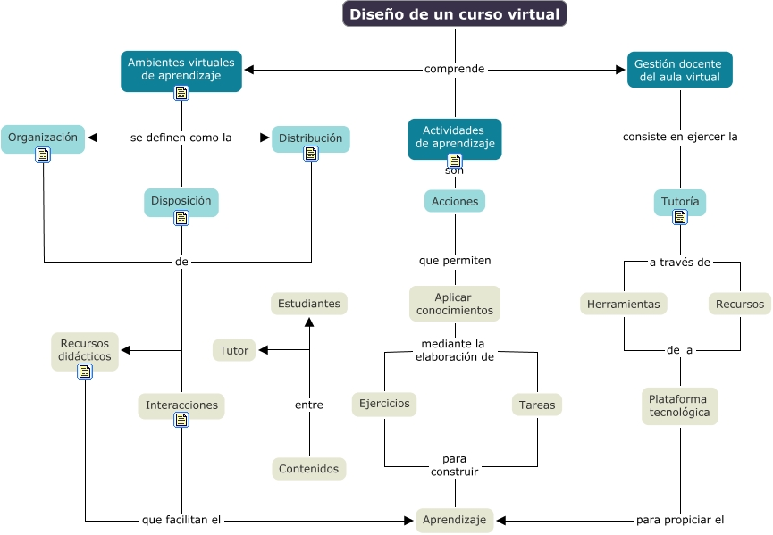

WARNING:
JavaScript is turned OFF. None of the links on this concept map will
work until it is reactivated.
If you need help turning JavaScript On, click here.
Este Cmap, tiene información relacionada con: mapa_docencia_virtual_unid_3.cmap, Recursos didácticos que facilitan el Aprendizaje, Diseño de un curso virtual comprende Actividades de aprendizaje, Interacciones entre Contenidos, Aplicar conocimientos mediante la elaboración de Ejercicios, Tutoría a través de Recursos, Acciones que permiten Aplicar conocimientos, Disposición de Interacciones, Organización de Recursos didácticos, Recursos de la Plataforma tecnológica, Aplicar conocimientos mediante la elaboración de Tareas, Actividades de aprendizaje son Acciones, Ambientes virtuales de aprendizaje se definen como la Distribución, Plataforma tecnológica para propiciar el Aprendizaje, Interacciones entre Estudiantes, Gestión docente del aula virtual consiste en ejercer la Tutoría, Interacciones entre Tutor, Interacciones que facilitan el Aprendizaje, Diseño de un curso virtual comprende Ambientes virtuales de aprendizaje, Herramientas de la Plataforma tecnológica, Diseño de un curso virtual comprende Gestión docente del aula virtual
